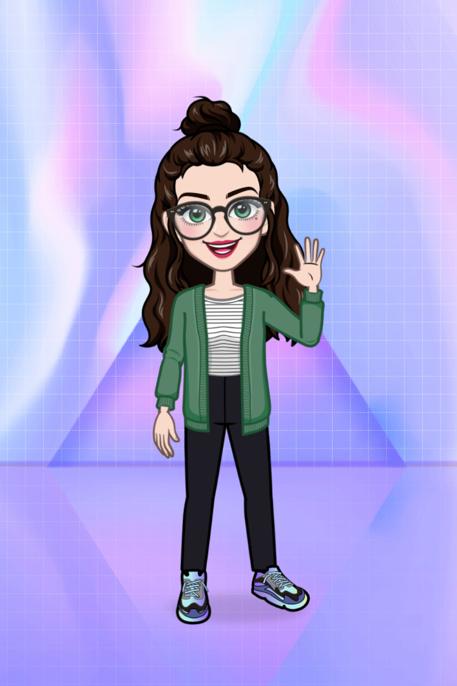

Isabella Beneveni Smith
Desenvolvedora BackendSobre mim
Eu acredito que é possível sim trabalhar fazendo aquilo que se ama diariamente. Pensando nisso, fiz uma transição de carreira do RH para o mundo Tech. Sou formada em Engenharia e em Letras e atualmente curso Análise e Desenvolvimento de Sistemas na Uninter. Sou uma Desenvolvedora Backend apaixonada por tecnologia e desenvolvimento. Sou curiosa e busco sempre aprender. Minha missão é entregar softwares de qualidade, que resolvam problemas e impactem positivamente a vida de seus usuários.

Analista de Sistemas Jr
Atualmente, trabalho na CI&T como Analista de Sistemas com foco em Java, utilizando Spring e Junit. Utilizo bancos de dados SQL e noSQL.
- Características
- Aniversário: 23 de Setembro
- Idade: 29 anos
- Cidade: Campinas
- Estado: São Paulo
- Hobbies
- Filmes e Séries
- Leitura
- Viajar
- Ouvir música
"Seja você a mudança que quer ver no mundo." (Mahatma Gandhi)